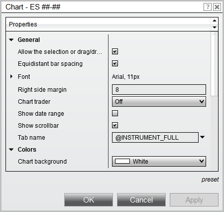

|
<< Click to Display Table of Contents >> Properties |


|
Properties
|
<< Click to Display Table of Contents >> Properties |
|
A collection of properties related to the configuration of the Chart

Warning: These are UI properties which are designed to be set by a user. Attempting to modify these values through a custom script is NOT guaranteed to take effect. |
A ChartControlProperties object containing values for all properties configured on the specified ChartBars object.
Property |
Return Type and Description |
AllowSelectionDragging |
A bool indicating selected chart objects can be moved within a chart panel or dragged to a new chart panel |
AlwaysOnTop |
A bool indicating "Always on Top" is enabled for the chart window |
AreHGridLinesVisible |
A bool indicating the horizontal grid lines are visible on the chart |
AreTabsVisible |
A bool indicating tabs are visible in the chart window |
AreVGridLinesVisible |
A bool indicating the vertical grid lines are visible on the chart |
AxisPen |
A Stroke object used in painting the x- and y-axis |
BarDistance |
A float measuring the distance (in pixels) between the left or right edge of one bar and the corresponding edge of the previous or subsequent bar |
BarMarginRight |
An int representing the "Right Margin" property value configured on the chart |
ChartBackground |
A Brush object used to paint the chart background |
ChartText |
A Brush object used to paint text on the chart |
ChartTraderVisibility |
An enum indicating the visibility status of Chart Trader. Possible values are Collapsed, Visible, and VisibleCollapsed |
CrosshairCrosshairType |
An enum indicating the type of Cross Hair enabled on the chart. Possible values are Off, Local, Global, and GlobalNoTimeScroll |
CrosshairIsLocked |
A bool indicating the Cross Hair's vertical line is locked in place |
CrosshairLabelBackground |
A Brush object used to paint the Cross Hair's price and time markers in the x- and y-axis |
CrosshairLabelForeground |
A Brush object used to paint the text in the Cross Hair's price and time markers |
CrosshairPen |
A string representing the Pen used within the Stroke that is used to draw the Cross Hair |
CrosshairStroke |
A CrosshairStroke object containing information on the Cross Hair's Stroke, CrosshairType, and isLocked property |
GridLineHPen |
A GridLine object containing information on the horizontal grid lines' Stroke and isVisible property |
GridLineVPen |
A GridLine object containing information on the vertical grid lines' Stroke and isVisible property |
InactivePriceMarkersBackground |
A Brush object used to paint the background of inactive price markers on the chart |
InactivePriceMarkersForeground |
A Brush object used to paint the display text of inactive price markers on the chart |
LabelFont |
A NinjaTrader.Gui.Tools.SimpleFont object containing information on the font used in text labels throughout the chart |
PanelSplitterPen |
A Stroke object used to paint the lines between chart panels |
ShowDateRange |
A bool indicating the date range of the bars painted on the visible chart canvas will be displayed within the chart |
ShowScrollBar |
A bool indicating the horizontal scroll bar is visible beneath the x-axis |
SnapMode |
An enum indicating the currently enabled Snap Mode. Possible values are None, Bar, Price, and BarAndPrice |
TabName |
A string representing the name of the current tab |
<ChartControl>.Properties
protected override void OnRender(ChartControl chartControl, ChartScale chartScale) |